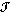
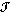
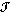
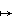

A map f: X
 Y between topological spaces is continuous if f -1(B)
Y between topological spaces is continuous if f -1(B)  X whenever B Y.
X whenever B Y.
| Previous page (Properties of topological spaces) | Contents | Next page (The subspace topology) |
As previewed earlier whan we considered open sets in a metric space, we can now make the definition:
Definition
A map f: X Y between topological spaces is continuous if f -1(B) X whenever B Y.
Remark
Note that a continuous map f: X Y "induces" a map from Y to X by B  f -1(B).
Definition
A map f: X Y between topological spaces is a homeomorphism or topological isomorphism if f is a continuous bijection whose inverse map f-1 is also continuous.
Remark
By the remark above, such a homeomorphism induces a one-one correspondence between X and Y.
Examples
 ). Then f is a homeomorphism.
). Then f is a homeomorphism. -neighbourhood is open. This -neighbourhood is an open square in R2 which is open in the usual metric.-neighbourhood in the usual metric (an open disc) is open in d .
-neighbourhood is open. This -neighbourhood is an open square in R2 which is open in the usual metric.-neighbourhood in the usual metric (an open disc) is open in d . (X, 2) is continuous if 1 is stronger (contains more open sets) than 2 .
(X, 2) is continuous if 1 is stronger (contains more open sets) than 2 .
| Previous page (Properties of topological spaces) | Contents | Next page (The subspace topology) |